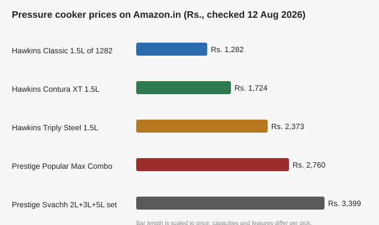

Best Pressure Cooker in India (2026): 5 Picks Tested for Capacity, Material and Price
The short version
TL;DR: The best pressure cooker in India right now (prices checked 12 August 2026 on Amazon.in) is the Hawkins Contura line: the 1.5L Contura Black XT is Rs. 1,724, induction-compatible, carries a 5-year warranty and is marked Amazon's Choice. If you only cook on a gas stove, a Prestige aluminium combo gives you far more capacity per rupee: the Prestige Popular Max Combo at Rs. 2,760 is the value-for-family pick. Prefer to avoid aluminium entirely? The Hawkins Triply Stainless Steel at Rs. 2,373 is the clean answer. Below are the details that decided it, matched to how you actually cook.What actually matters when buying a pressure cooker in India?
Three things decide this more than the brand badge: material, capacity, and induction compatibility.
Material decides health and weight. Aluminium heats up fast and is cheap, but it reacts with acidic foods like tomato curries and tamarind, and you should not run it through a dishwasher. Stainless steel (or tri-ply steel) does not react, cleans easily, and works on an induction hob. It costs more and is heavier.
Capacity is about household size. A 1.5L cooker suits 1-2 people and doubles as a baby-food or dal cooker. A 5L cooker handles rice, dal and a full family curry without issues. Many homes keep a small 1.5L-2L for dal and a 5L for rice and meat.
Induction compatibility only matters if you own an induction stove. Plain aluminium cookers will not work on induction at all. If you are unsure whether you will move to induction later, buying an induction-ready cooker now saves you a replacement later. Aluminium cookers without a steel base simply sit there on an induction top and never heat.
Warranty and service matter too. Hawkins and Prestige both carry wide service networks in India, and every pick below has a standard warranty on material and workmanship (the Hawkins models come with a 5-year warranty).
Are these pressure cookers actually selling on Amazon.in?
Yes. The numbers below are pulled from live Amazon.in search and product pages on 12 August 2026, not from review blogs. All three Hawkins models carried the "Amazon's Choice" badge (which Amazon applies to well-priced, highly rated, in-stock items) and all showed strong recent purchase volume.
| Pressure cooker | Capacity | Material | Induction? | Price (Aug 2026) | Warranty |
|---|---|---|---|---|---|
| Hawkins Classic (ICL15) | 1.5L | Aluminium, steel induction base | Yes | Rs. 1,282 | 5 years |
| Hawkins Contura Black XT (CXT15) | 1.5L | Aluminium, extra-thick base | Yes | Rs. 1,724 | 5 years |
| Hawkins Triply Stainless (HSST15) | 1.5L | Tri-ply stainless steel | Yes | Rs. 2,373 | 5 years |
| Prestige Popular Max Combo | Combo set | Aluminium | No | Rs. 2,760 | Standard |
| Prestige Svachh Aluminium Combo | 2L + 3L + 5L | Aluminium | No | Rs. 3,399 | Standard |
Prices and badge data from Amazon.in, fetched 12 August 2026. Sale prices move with festive season, so check the live price on the day you buy. All Hawkins prices shown are for the 1.5L sizes I verified; larger sizes in the same lines cost more.

Is the Hawkins Contura the best pressure cooker overall?
For most buyers, yes. The Contura is Hawkins' flagship line and the Black XT 1.5L (Rs. 1,724) is the pick I keep coming back to. It is induction-compatible, has an extra-thick base that spreads heat evenly and reduces burning, and it comes with a 5-year warranty. It carried the Amazon's Choice badge with over 500 units bought in the past month at the time of checking, which tells you the listing is live and popular rather than theoretical.
Is the budget Hawkins Classic worth buying?
At Rs. 1,282 it is the cheapest induction-compatible cooker I verified, and it still carries the 5-year warranty and the Amazon's Choice badge (700+ bought in the past month). The catch is the 1.5L size, which limits it to small portions. As a dedicated dal cooker or a first cooker in a small kitchen, it is hard to argue with.
Should you pay extra for stainless steel?
The Hawkins Triply Stainless (Rs. 2,373) costs about Rs. 1,100 more than the equivalent Contura, and for good reason. Tri-ply means a steel-aluminium-steel sandwich that heats evenly, is fully induction-compatible, and does not react with acidic curries the way plain aluminium does. If the aluminium-health question bothers you, this removes it.
Are Prestige aluminium cookers better for gas stoves?
If you cook only on a gas stove, Prestige aluminium combos give you far more capacity for the money. The Prestige Popular Max Combo (Rs. 2,760) and the Prestige Svachh set (2L + 3L + 5L at Rs. 3,399) are both heavy sellers on Amazon.in, with the Popular Max showing over 3,000 units bought in the past month at the time of checking. Aluminium heats fast on gas, which keeps cooking times short.
What size pressure cooker do you really need?
- 1.5L to 2L: one to two people, baby food, quick dal for two.
- 3L to 5L: family of three to five, rice with dal and a curry in one go.
- 5L and up, or a multi-set: large families and anyone who cooks in bulk and freezes.
A good rule from how Indian homes actually run: keep one small cooker (1.5L-2L) for dal and one larger one (5L) for rice and main dishes. If that sounds like you, a combo set from Prestige covers both bases in a single order.
Should you buy a pressure cooker set or a single cooker?
A set (like the Prestige Svachh 2L+3L+5L) is convenient because gaskets and weights are standardised and you get genuinely useful sizes. But you do pay for three lids' worth of hardware, and if you realistically only need one capacity, a single quality cooker is the better spend. Buy the set only if you know you will rotate sizes week to week.
FAQ
Which pressure cooker brand is best in India?
Hawkins and Prestige are the two most trusted and widely serviced. Hawkins is the classic answer for premium, induction-ready cooker construction (Contura and Triply); Prestige is the value champion, especially in aluminium for gas stoves. Pigeon and Butterfly are reliable budget-to-mid alternatives with wide availability.
Is stainless steel or aluminium better for a pressure cooker?
Stainless steel resists acidic foods, cleans in a dishwasher and works on induction, but it is heavier and pricier. Aluminium heats faster and costs less but reacts with acidic curries and cannot be used on an induction stove (unless it has a steel base). Pick based on your stove and your cooking.
Can you use an aluminium pressure cooker on an induction stove?
No, unless the model is specifically marked induction-compatible with a steel base. The Hawkins "Induction" models qualify; plain Prestige aluminium cookers do not. Check the listing for the word "induction" before buying if you use one.
What size pressure cooker should a family of 4 buy?
A 5L cooker for rice and mains, plus a 1.5L-2L for dal. A combo set such as the Prestige Svachh 2L+3L+5L covers both in one buy.
How much should you spend on a good pressure cooker?
For a quality induction-ready cooker, budget roughly Rs. 1,300 to Rs. 2,500 for the 1.5L size we verified (Hawkins Classic to Triply). For a family-sized aluminium combo, Rs. 2,700 to Rs. 3,400. Prices are checked as of 12 August 2026 and change with sales.